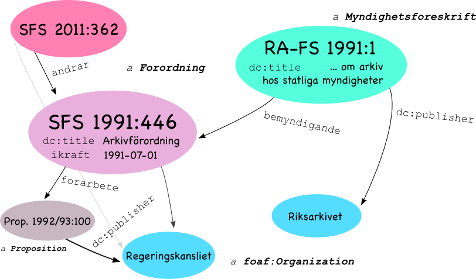

Det svenska rättsinformationssystemet
Presenter Notes
Domänen
- Regering och riksdag: utfärdar förordningar och lagar
- 100-talet myndigheter: publicerar föreskrifter
- Domstolar: rättsfall som leder till avgöranden
- Massor av dokument
Presenter Notes
Situationen
- Publikationsansvar: respektive myndighet
- Vidareutnyttjare: samlar data så gott det går
Presenter Notes
Behoven
- Förordning: SFS 1999:175
- Koherens: beskrivningar
- Hållbarhet: URIer
Presenter Notes
Data
Presenter Notes

Presenter Notes
1 @prefix : <http://rinfo.lagrummet.se/ns/2008/11/rinfo/publ#> .
2 @prefix dc: <http://purl.org/dc/terms/> .
3 @prefix xsd: <http://www.w3.org/2001/XMLSchema#> .
4
5 <http://rinfo.lagrummet.se/publ/ra-fs/2004:2> a :Myndighetsforeskrift;
6
7 :forfattningssamling <http://rinfo.lagrummet.se/serie/fs/ra-fs>;
8 :arsutgava "2004";
9 :lopnummer "2";
10
11 dc:identifier "RA-FS 2004:2";
12 dc:title """Riksarkivets föreskrifter och allmänna råd om
13 gallring och återlämnande av handlingar vid upphandling;"""@sv;
14 dc:publisher <http://rinfo.lagrummet.se/org/riksarkivet>;
15
16 :beslutadAv <http://rinfo.lagrummet.se/org/riksarkivet>;
17 :bemyndigande <http://rinfo.lagrummet.se/publ/sfs/1991:446#p_12>;
18
19 :beslutsdatum "2004-08-30"^^xsd:date;
20 :utkomFranTryck "2004-09-27"^^xsd:date;
21 :ikrafttradandedatum "2004-11-01"^^xsd:date .
Presenter Notes
Presenter Notes
Inhämtning
Presenter Notes
Hantering
- Listor, av...
- Poster, som paketerar...
- Dokument, som kan beskrivas med...
- Egenskaper och länkar
Presenter Notes
Syndikering
- Lista: Atom feed
- Post: Atom entry
- Dokument: PDF, HTML+RDFa
- Beskrivning: RDF (RDF/XML)
Presenter Notes

Presenter Notes
Atom
Presenter Notes
Poster
1 <entry>
2
3 <id>http://rinfo.lagrummet.se/publ/ra-fs/2004:2</id>
4 <updated>2004-09-27T00:00:00.000Z</updated>
5 <published>2004-09-27T00:00:00.000Z</published>
6
7 <title>Riksarkivets föreskrifter och allmänna råd om gallring och
8 återlämnande av handlingar vid upphandling;</title>
9 <summary></summary>
10
11 <content src="https://www.statensarkiv.se/Sve/RAFS/Filer/ra-fs-2004-02.pdf"
12 type="application/pdf"
13 hash="md5:ca68b77f41ad2231586cf3e4d7970629"/>
14
15 <link rel="alternate"
16 href="https://www.statensarkiv.se/Sve/RAFS/showrdf?doc=2004-2"
17 type="application/rdf+xml"
18 length="2493" hash="md5:af7e5154dc653296506564d0b038697c"/>
19
20 </entry>
Presenter Notes
Feeds
- RFC 4287: The Atom Syndication Format
- RFC 5005: Feed Paging and Archiving
- Tombstones I-D: The Atom "deleted-entry" Element
Presenter Notes
Kompletta
1 <feed xmlns="http://www.w3.org/2005/Atom"
2 xmlns:fh="http://purl.org/syndication/history/1.0">
3
4 <fh:complete/>
Presenter Notes
Arkiv + raderingar
1 <feed xmlns="http://www.w3.org/2005/Atom"
2 xmlns:at="http://purl.org/atompub/tombstones/1.0">
3
4 <link rel="prev-archive"
5 href="https://www.statensarkiv.se/rafs/feed/archive/2008/index.atom"/>
6
7 <at:deleted-entry
8 ref="http://rinfo.lagrummet.se/publ/ra-fs/3010:0"
9 when="2010-03-08T15:55:34+0100"/>
Presenter Notes
Datadrivet
Presenter Notes
VoID
1 <http://rinfo.lagrummet.se/sys/dataset> a void:Dataset;
2
3 dc:publisher <http://rinfo.lagrummet.se/org/domstolsverket>;
4 foaf:homepage <http://rinfo.lagrummet.se/>;
5 void:vocabulary rpubl:, dc:, foaf:;
6
7 iana:describedby <http://rinfo.lagrummet.se/sys/uri/space#>;
8 iana:describedby <http://rinfo.lagrummet.se/sys/validation/>;
9
10 void:dataDump [
11 iana:current <http://rinfo.lagrummet.se/feed/current>;
12 dc:identifier "tag:lagrummet.se,2009:rinfo"^^xsd:anyURI;
13 dc:format "application/atom+xml"
14 ];
15
16 dc:source [
17 dc:publisher <http://rinfo.lagrummet.se/org/boverket>;
18 iana:current <https://rinfo.boverket.se/index.atom>;
19 dc:identifier "tag:boverket.se,2009:rinfo:feed"^^xsd:anyURI;
20 dc:format "application/atom+xml"
21 ],
22
23 # ...
Presenter Notes
Validering
Presenter Notes
Schemarama
- Bakgrundsdata (modeller)
- Ladda resursbeskrivningen
- Använd SPARQL 1.1 för att kontrollera
- Skapa felmeddelanden (
CONSTRUCT)
Presenter Notes
Finns text på svenska?
1 PREFIX sch: <http://purl.org/net/schemarama#>
2
3 CONSTRUCT{
4
5 [] a sch:Warning;
6 rdfs:isDefinedBy <http://rinfo.lagrummet.se/sys/validation/expected_lang.rq>;
7 sch:message """Resurs [1]: förväntade något värde för egenskap [2]
8 på svenska, fann [3]."""@sv;
9 sch:implicated (?thing ?prop ?value);
10 dct:source ?context .
11
12 } WHERE{
13 GRAPH ?context{
14 ?thing ?prop ?value .
15 FILTER(?prop in (dct:title, dct:description))
16 MINUS{
17 ?thing ?prop ?anyvalue .
18 FILTER(langMatches(lang(?anyvalue), 'sv'))
19 }
20 }
21 }
Presenter Notes
Verifiera kardinalitet
1 CONSTRUCT{
2
3 [] a sch:Warning;
4 sch:message """Resurs [1]: inget värde angivet för egenskap [2]
5 (ska vara minst [3])."""@sv;
6 sch:implicated (?thing ?baseprop ?cardinality) .
7
8 } WHERE{
9
10 ?restr a owl:Restriction;
11 owl:onProperty ?baseprop;
12 (owl:minCardinality | owl:cardinality) ?cardinality .
13
14 FILTER(?cardinality > 0)
15
16 GRAPH ?context{ ?thing a ?type . }
17
18 ?type rdfs:subClassOf+ ?restr .
19
20 FILTER NOT EXISTS{
21 ?prop rdfs:subPropertyOf* ?baseprop .
22 GRAPH ?context { ?thing ?prop ?value . }
23 }
24
25 }
Presenter Notes
URI-rymden
Presenter Notes
Varianter
http://rinfo.lagrummet.se/publ/sfs/1999:175
http://rinfo.lagrummet.se/publ/sfs/1899:bih_40_s_3
http://rinfo.lagrummet.se/publ/saeifs/1983:1
http://rinfo.lagrummet.se/publ/sfs/1999:175/konsolidering/1999-03-25
http://rinfo.lagrummet.se/publ/tsfs/2010:182
http://rinfo.lagrummet.se/publ/rf/nja/2005:57
http://rinfo.lagrummet.se/publ/rf/nja/2005/s_523
http://rinfo.lagrummet.se/publ/rf/nja/1913/not/b_418
http://rinfo.lagrummet.se/publ/dom/hd/b333-04/2005-06-17
http://rinfo.lagrummet.se/publ/avg/jk/874-05-30
http://rinfo.lagrummet.se/publ/dir/1999:42
http://rinfo.lagrummet.se/publ/utr/ds/2005:26
http://rinfo.lagrummet.se/publ/utr/sou/2000:114
http://rinfo.lagrummet.se/publ/fm/2005:2
http://rinfo.lagrummet.se/publ/prop/2002/03:20
http://rinfo.lagrummet.se/publ/prop/1975:95
... många fler ...
Presenter Notes
CoIN
Composition of Identifier Names
Presenter Notes
1 @prefix coin: <http://purl.org/court/def/2009/coin#> .
2 @prefix : <http://rinfo.lagrummet.se/sys/uri/space#> .
3
4 : a coin:URISpace;
5 coin:base "http://rinfo.lagrummet.se";
6 coin:slugTransform [
7 coin:apply coin:ToLowerCase;
8 coin:replace "é e", "å aa", "ä ae", "ö oe";
9 coin:spaceReplacement "_";
10 ];
11
12 coin:template [
13 coin:uriTemplate "/publ/{fs}/{arsutgava}:{lopnummer}";
14 coin:binding [
15 coin:variable "fs";
16 coin:property rpubl:forfattningssamling;
17 coin:slugFrom skos:altLabel
18 ], [
19 coin:variable "arsutgava";
20 coin:property rpubl:arsutgava
21 ], [
22 coin:variable "lopnummer";
23 coin:property rpubl:lopnummer
24 ]
25 ],